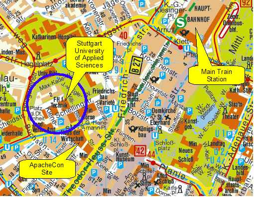

Apache Forrest: Events
- Upcoming events
-
Past events
- ApacheCon Europe 2009 (23-27 March 2009)
- ApacheCon US 2008 (3-7 November 2008)
- ApacheCon Europe 2008 (7-11 April 2008)
- Apache Cocoon Get-Together 2007 (3-5 October 2007)
- ApacheCon US 2007 (12-16 November 2007)
- ApacheCon Europe 2007 (1-4 May 2007)
- ApacheCon US 2006 (9-13 October 2006)
- ApacheCon EU 2006 (26-30 June)
- ApacheCon US 2005 (10-14 December)
- ApacheCon Europe 2005 (18-22 July)
Upcoming events
ApacheCon US 2009 (2-6 November 2009)
ApacheCon US 2009 - Please make plans to join us for the conference in Oakland, California on 2-6 November 2009.
ForrestFriday monthly get-together
Note that these sessions are currently on hold.
On the second Friday of each month we have a 24-hour get-together using IRC and other collaborative tools, to work on Forrest development and get to know each other. See how to participate.
Past events
ApacheCon Europe 2009 (23-27 March 2009)
ApacheCon Europe 2009 - Please make plans to join us for the conference in Amsterdam, The Netherlands on 23-27 March 2009.
ApacheCon US 2008 (3-7 November 2008)
ApacheCon US 2008 - Please make plans to join us for the conference in New Orleans on 3-7 November 2008.
ApacheCon Europe 2008 (7-11 April 2008)
ApacheCon Europe 2008 - Please make plans to join us for the conference in Amsterdam, The Netherlands on 7-11 April 2008
Apache Cocoon Get-Together 2007 (3-5 October 2007)
Apache Cocoon Get-Together 2007 - Please make plans to meet Cocoon people in Rome, Italy on 3-5 October 2007.
ApacheCon US 2007 (12-16 November 2007)
ApacheCon US 2007 - Please make plans to join us for the conference in Atlanta, Georgia, USA on 12-16 November 2007.
ApacheCon Europe 2007 (1-4 May 2007)
ApacheCon Europe 2007 - Please make plans to join us for the conference in Amsterdam, The Netherlands on 1-4 May 2007.
ApacheCon US 2006 (9-13 October 2006)
ApacheCon US 2006 - Please make plans to join us for the conference in Austin, Texas, USA on 9-13 October 2006.
Apart from all of the general ApacheCon events, there are a number of Forrest-specific events. In chronological order ...
ApacheCon Session: WE21: Single Source Publishing with Apache Forrest
Wednesday 11 October - Official ApacheCon session conducted by Ferdinand Soethe. Read more.
ApacheCon EU 2006 (26-30 June)
ApacheCon EU 2006 - Please make plans to join us for the conference in Dublin, Ireland on 26-30 June 2006.
Apart from all of the general ApacheCon events, there are a number of Forrest-specific events. In chronological order ...
ApacheCon Session: FR19: Single Source Publishing with Apache Forrest
Friday 30 June - Official ApacheCon session conducted by Ferdinand Soethe.
ApacheCon US 2005 (10-14 December)
ApacheCon US 2005 took place in San Diego, California, USA on 10-14 December 2005.
Apart from all of the general ApacheCon events, there is one Forrest-specific event.
ApacheCon Session: Single Source Publishing with Apache Forrest
Tuesday 13 December at 09:00 to 10:00 - Official ApacheCon session conducted by Ferdinand Soethe. See the ApacheCon Schedule Session TU01. The event is only open to ApacheCon attendees.
ApacheCon Europe 2005 (18-22 July)
ApacheCon Europe 2005 in Stuttgart, Germany on 18-22 July 2005. For the first time there is a session related to Apache Forrest.
Apart from all of the general ApacheCon events, there are a number of Forrest-specific events. In chronological order ...
Apache committers hackathon
Monday 18 July and Tuesday 19 July all day - Open to any Apache committer. Among the many topics, some of us will informally chat about Apache Forrest and maybe fix some bugs. We will probably collaborate with the Apache Lenya committers too.
Apache Forrest workshop on Views
Monday 18 July commencing at 18:30 - We will go out to dinner and then meet for a developers workshop specifically about the new Views plugin development. Topics will include Views, XHTML2 internal format, and general project planning. Discussions will be technical and will assume knowledge of Forrest. We will certainly answer questions to ensure that people understand the background. However the main aim is an intensive project design session. The event is open to anybody, you don't need to be attending ApacheCon. Venue and Directions: Gather at the foyer of the ApacheCon.
Usability professionals meeting
Tuesday 19 July commencing at 18:30 - Johannes Schaefer will present Apache Forrest to an informal meeting of usability professionals. The event is open to other German-speaking people. See further information.
ApacheCon Session: Single Source Publishing with Apache Forrest
Wednesday 20 July at 14:30 to 15:30 - Official ApacheCon session conducted by Ross Gardler and Ferdinand Soethe. See the ApacheCon Schedule Session WE16. The event is only open to ApacheCon attendees.
Apache Forrest get-together
Wednesday 20 July commencing at 20:00 - Informal get together to discuss any topic related to Apache Forrest. Follows on from the session earlier in the day. Please come and meet other Forrest developers and users. Describe your own use cases. The event is open to anybody, you don't need to be attending ApacheCon. Venue and Directions: Gather at the foyer of the ApacheCon at 20:00. The event will be held at Stuttgart University of Applied Sciences Many thanks to HfT. See (HfT map) which is just a few steps north-west of the ApacheCon-site:
